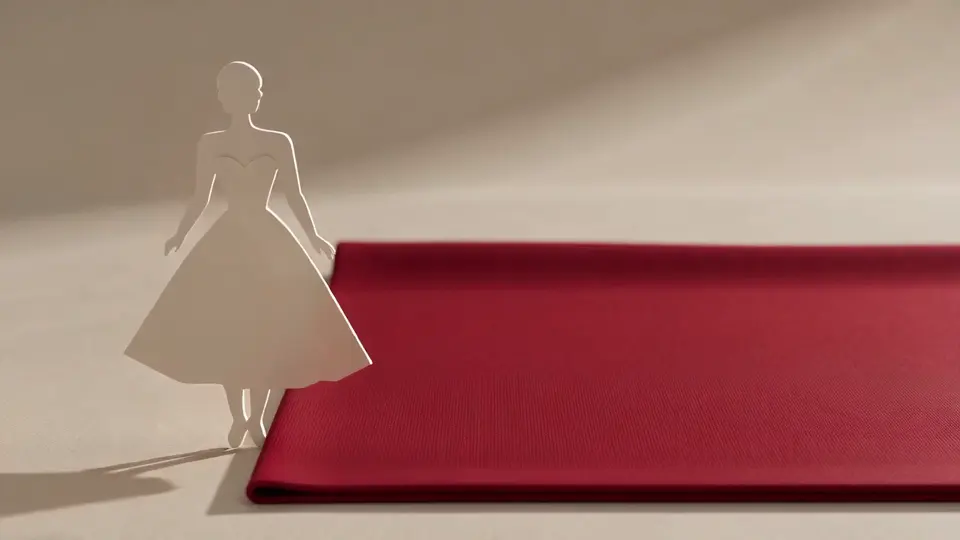
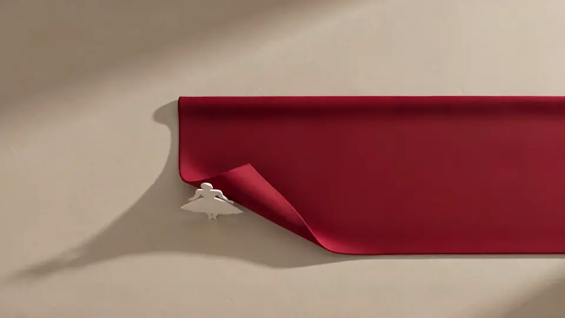
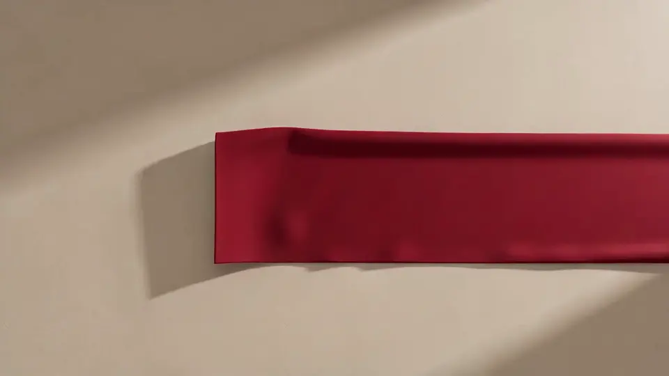
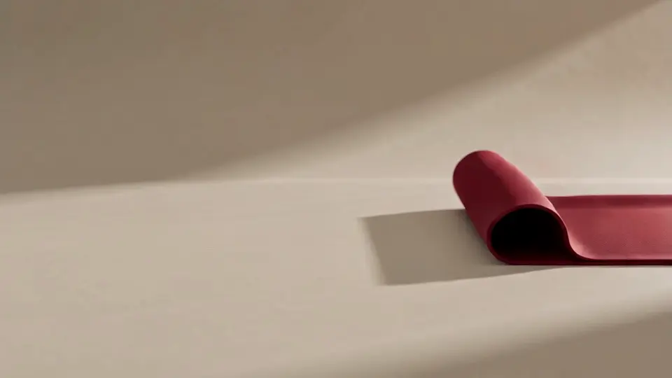

Cut for the life you want.
An independent label cutting twenty-eight looks from one material story. Autumn/winter 2026.
FW26 · 28 looks · 1 material story
atelier is a sample brand from Landscape Lab. Every look, figure and quote on this page is sample content.
Night Ferry Trouser

High waist, wide leg, and a hem weighted with lead tape so it swings when you walk.
Size M · Waist 72 cm
Salt Shirt

Oversized, cut on the straight grain, with a placket you can fold two ways.
Size M · Bust 90 cm
Rouge Vest

Dyed in a single one-hundred-and-twenty-metre batch, so every vest matches.
Size M · Bust 90 cm
Harbour Skirt
Forty-two pleats, each pressed and pinned by one person in one afternoon.
Size M · Hip 98 cm
Evening Knit

A boxy jumper knitted flat and linked by hand, with seams that sit on the inside.
Size M · Bust 90 cm
Twenty-eight looks, one cloth story
Autumn/winter 2026 was cut from a single mill's wool, dyed in one red, and finished by hand in our Lisbon workroom. Six of the looks are shown here.
Measured on bodies, not on charts
Body measurements in centimetres. Each size was fitted on three people before it was graded.
| Size | Bust (cm) | Waist (cm) | Hip (cm) |
|---|---|---|---|
| XS | 82 | 64 | 90 |
| S | 86 | 68 | 94 |
| M | 90 | 72 | 98 |
| L | 95 | 77 | 103 |
| XL | 101 | 83 | 109 |
Each look is stamped on the tape at size M.
Coats and knits are cut generously: between sizes, take the smaller. Trousers run true to the waist measurement.
Worn, mended and written about
“I have worn the Quay Coat every day since October and it only looks better. Nothing else in my wardrobe has earned that.”
Helena Brandt, buyer, Galerie Lindqvist, Copenhagen
The atelier
- Looks in FW26
- 28
- Made in
- Lisbon, by 11 people
- Pieces per style
- Never more than 120
- Repairs
- Free for life
Be first through the door.
The drop opens to the list a day before it opens to everyone. Leave your size and we will hold a place.